Решение этого задания может показаться довольно странным, его решают кто во что горазд, вы можете встретить на просторах интернета совершенно разные решения. Само задание довольно легкое, особенно для условной второй части экзамена, не требует ровным счетом никаких знаний (кроме экселя или либры подобного и то, не сильно), кроме банальной внимательности и кропотливости в выполнении. Я покажу, на мой взгляд, самые наглядные и простые способы решения (хоть и, порой, долгие).
Пример 1) Демо 2024
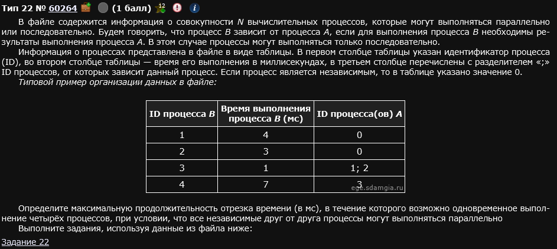
Зайдя в файл и открыв его с помощью экселя видим следующее:
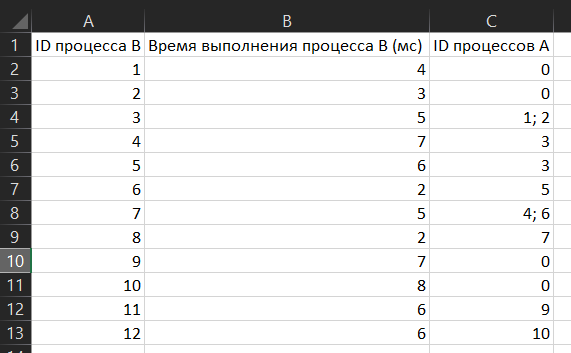
Ента ровно то, о чем говорилось в условии - процессы, их время выполнения и зависимости. Обратите внимание: некоторые процессы, согласно условию, независимы (где 0 написано), некоторые зависимы от других (например, процесс 7 зависим от 4 и 6; Это значит, что процесс 7 не может начаться раньше выполнения процессов 4 и 6).
Мы будем поступать наиболее наглядно: мы изобразим “схему” этих процессов так, чтобы нам было понятно каким образом их перемещать между собой, чтобы достичь желаемого.
Шаг 1)
Сузить 30-40-50 ячеек и сделать “таймфрейм” (в зависимости от самого задания).
Делается это так: выделяете столбцы желаемого диапазона и сверху прямо вот сужаете их. У вас автоматически сузятся все.
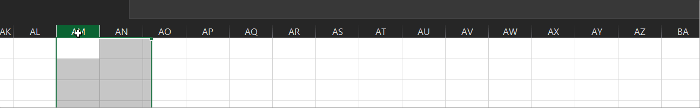
Таймфрейм - это просто временная шкала снизу каждой из наших сжатых ячеек. Я выберу вот такой:
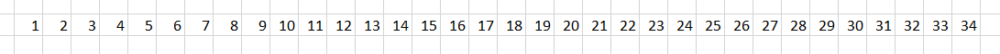
Шаг 2)
Рисуем длительности процессов.
Тыкаем “Вставка” -> “Иллюстрации” -> “Фигуры” -> “Прямоугольник”. Наша задача сделать что-то вот такое:
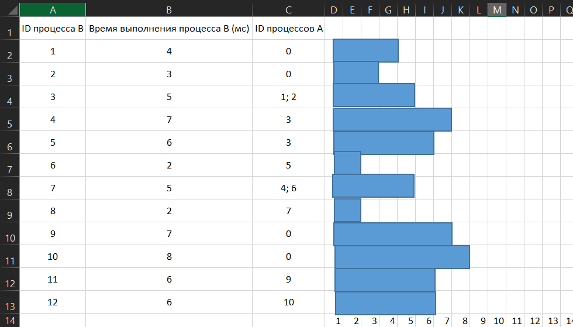
Здесь каждый синий прямоугольник отображает длительность соответствующего процесса в миллисекундах. Обратите внимание: левый край каждого из прямоугольника чуть-чуть не дотягивает до единицы, а правый край - ровно столько, сколько нужно. Это важно, делайте также.
Шаг 3)
Прописать названия прямоугольников.
Тыкайте на прямоугольник и вот прям на нем пишите его название. Названия - это ID процесса В. Должно получится что-то вот такое:
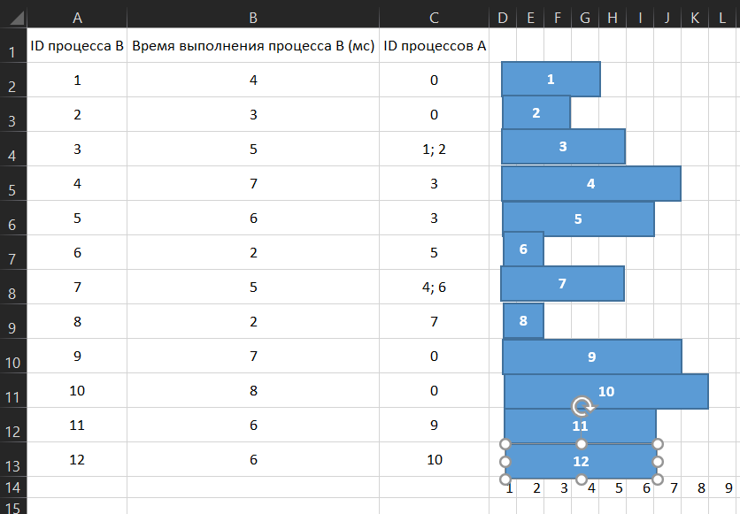
Шаг 4)
Прописать зависимости процессов.
Тыкаем Тыкаем “Вставка” -> “Иллюстрации” -> “Фигуры” -> “Линия”. Где “Контур” делаем ее позаметнее и пожирнее. С зажатой клавишой ctrl вы можете ее копировать:
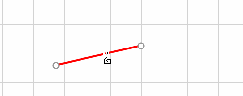
А далее буквально тянем ее до интересующего процесса и связываем как хотим.
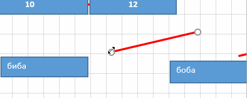
В итоге должно получится что-то вот такое:
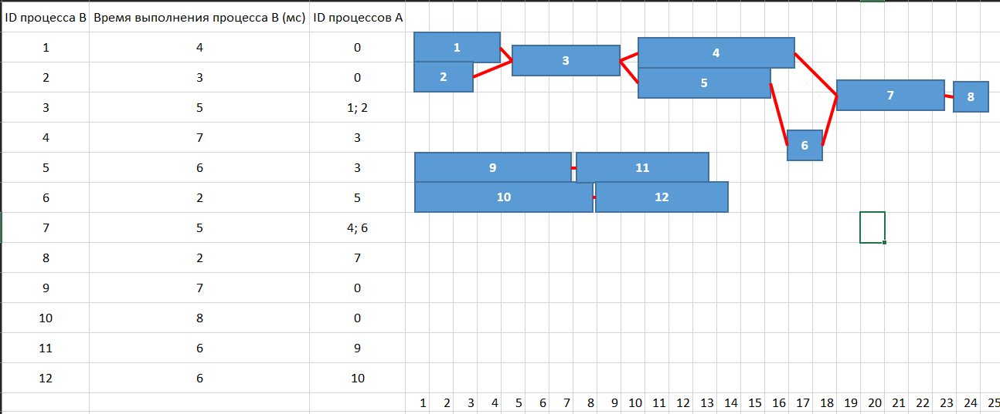
Логика такая: независимые процессы никак не могут идти в зависимости от какого-либо другого процесса, поэтому они стоят как бы вначале цепочки. А остальные ставятся в зависимости от каких-либо других (как на рисунке крч). Также, старайтесь выравнивать полученные процессы по правой границе ячеек.
Шаг 5)
Пытаемся ответить на вопрос:
Определите максимальную продолжительность процессов (в мс) в течении которых возможно одновременное выполнение четырех процессов, при условии, что все независимые друг от друга процессы могут выполняться параллельно.
По сути, тут говориться о том, что нам надо как-то подвигать эти прямоугольники между собой так, чтобы выполнялось 4 процесса параллельно и при этом длительность их выполнения была максимальной.
Дело нехитрое, подвигаем. Есть только одно правило, которое нам нужно соблюдать. Зависимые процессы не должны начинаться раньше, чем их зависимости. Т.е., например, процесс 7 не может начаться раньше процессов 4 и 6. У нас есть два “маркера”, которые позволяют определить начался ли зависимый процесс раньше или позже, чем тот, от которого он зависит. Первое - это само расположение прямоугольников (всегда сверяйтесь с изначальной таблицей). Второе - линии, которые мы нарисовали. Они, условно, не должны пересекаться. Т.е. не должно быть вот такого, например:
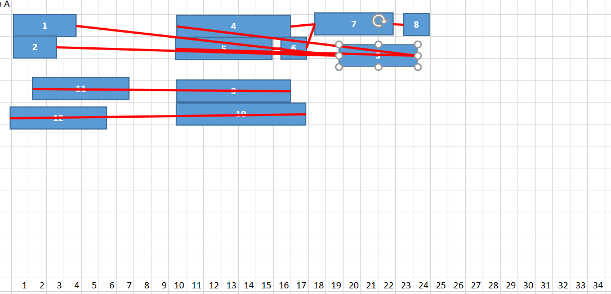
Как понять, как и что двигать? Все просто: нужно смотреть на наш таймфрейм и следить как бы в вертикальной плоскости, что процессы выполняются (т.е. если в столбце F, к примеру, находятся части 4 прямоугольников - это значит, что 4 процесса выполняются параллельно). Кстати, прямоугольники могут (и должны) располагаться почти вплотную, чтобы было четко понятно, что наш таймфрейм непрерывен (т.е. сразу же, как заканчивается один процесс, начинается другой). В целом, действуем методом научного тыка.
Я натыкал вот такое расположение прямоугольников:
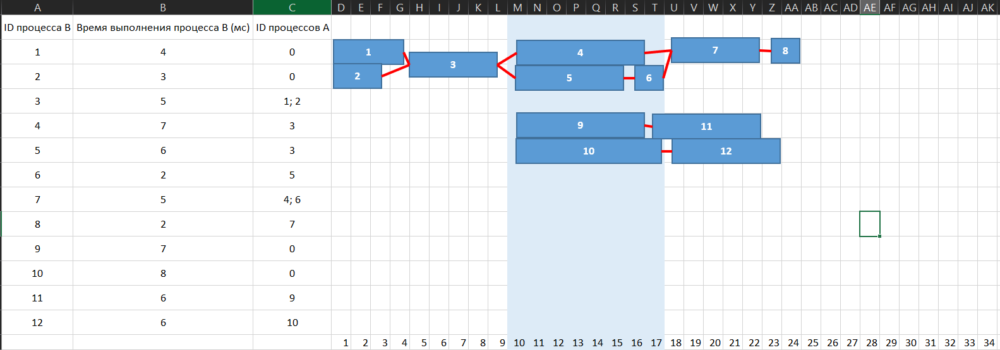
Между прямоугольниками есть зазоры, но это не значит, что процессы прерываются. Как я и говорил, один идет за одним, один сменяет другой (например, процесс 6 тут же сменяет собой процесс 5, как только 5ый завершится, таким образом, сохраняя общую непрерывность), поэтому все согласно условию.
Отвечая на вопрос задания: максимальная продолжительность 4 параллельно идущих процессов равна 7 мс.
Ответ: 7 мс.
Радуемся ли мы, если встретим такое на экзамене? Определенно, да. К сожалению, вопросы в этом задании могут отличаться друг от друга. Для примера, покажу как это задание выглядело в 2023 году. Вы увидите, что в 2023 году и само задание было другое и его решение сильно отличалось от того, что видели в 2024 году.
Пример 2)
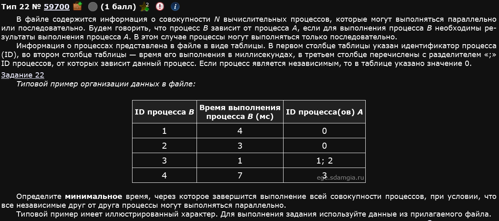
Открываем, видим вот такое:
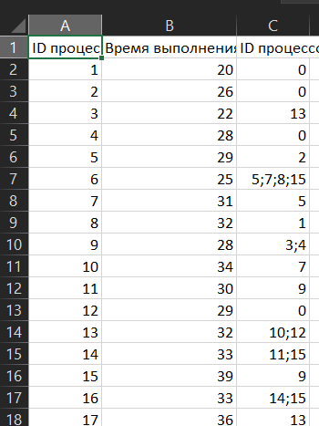
Отсортируем таблицу так, чтобы независимые процессы шли сверху таблицы. Можно применить просто по возрастанию:
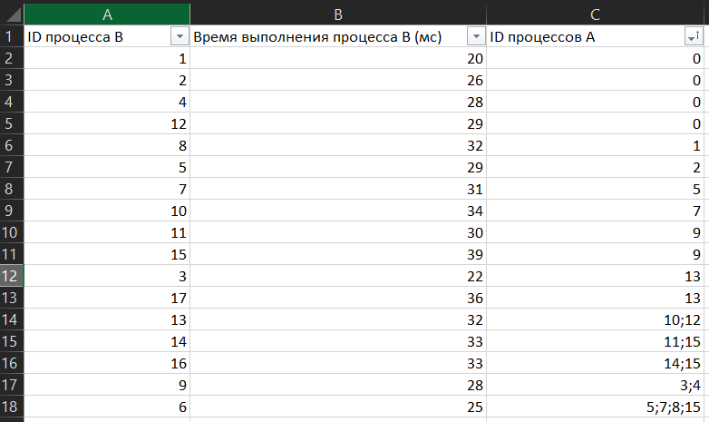
Давайте введем маленький термин - время окончания процессов. Это минимальное время, когда процесс может быть закончен, при выполнении всех необходимых для его работы условий. Получается, что нам надо найти как раз максимальное время окончания всех процессов. Время выполнения независимых процессов - и есть время, когда они оканчиваются, ведь они могут идти параллельно, независимо ни от чего. А теперь посчитаем время окончания всех остальных процессов прям вот в том порядке, в котором они расположены.
| ID Процесса | Время окончания |
|---|---|
| 8 | |
| 5 | |
| 7 | |
| 10 | |
| 11 | |
| 15 | |
| 3 | |
| 17 | |
| 13 | |
| 14 | |
| 16 | |
| 9 | |
| 6 | |
| Естественно, все это можно посчитать в экселе. |
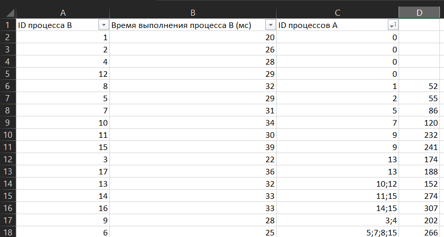
Ответ: 307.
Пример 3)
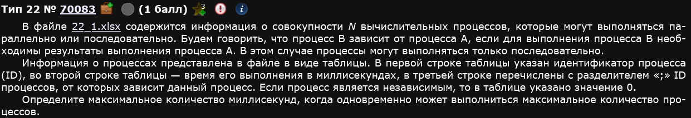
Здесь условие отличается оп сравнение с первым. Не фиксированное число процессов, а просто максимальное (это кол-во заранее не известно).
Делаем также, как первое, по точно таким же шагам.
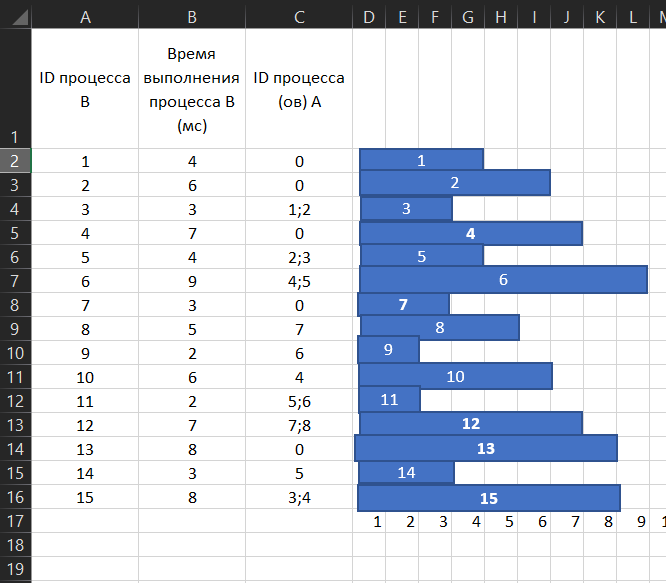
Здесь реализованы первые 3 шага.
Немного потыкавшись, выстраиваем вот такую схему, реализуя 4 и 5 шаги:
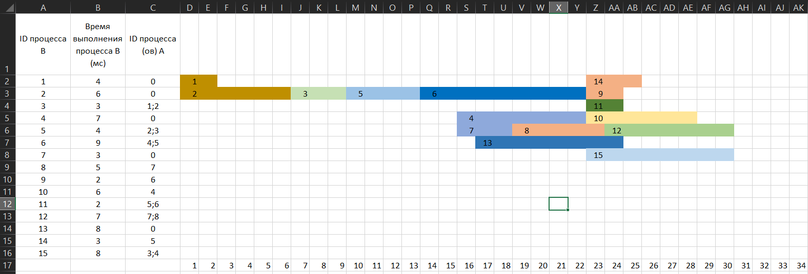
В процессе выполнения я понял, что здесь схема как в первом примере будет неудобной из-за кучи связей, поэтому я сделал вот как выше. Так тоже можно, главное - следить за тем где какие процессы заканчиваются.
Максимальное число процессов, которые могут выполняться одновременно - 7, а максимальное время, которое и требуется найти, когда все эти процессы активны - 2 мс.
Ответ: 2 мс.
Если вдруг составители ЕГЭ окажутся пиздец какими суками (а они могут), то подкинут следующий прототип.
Пример 4)
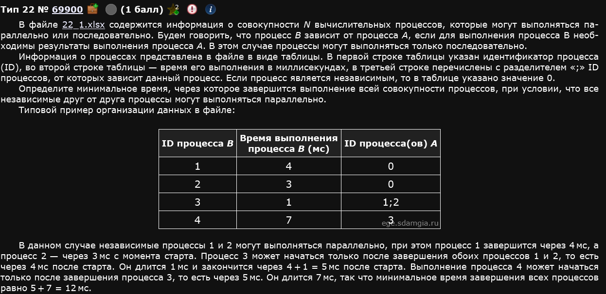
ЕГЭ-2024, Основная волна, Дальний восток
Я ебал в рот составителей конкретно этого задания. Дело в том, что таблица выглядит вот так:
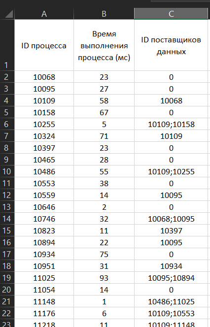
И там 101 строка,,,
Ебало тех, кто это задание встретил на ЕГЭ 2024 имаджинировали?
Любой из предыдущих методов решения этого задания здесь просто не сработает (схемы рисовать - заебетесь, зависимостей здесь слишком много, чтобы можно было посчитать напрямую, как во втором примере). Более того, в самом екселе считать все это довольно-таки проблематично. Была идея мол надо применить ПРОСМОТРХ (он же XLOOKUP, или, если вы мазохист и педофил, то ВПР), однако я так и не разобрался как здесь по-человечески его применять из-за ебейших и рандомных рекурсий.
Ну что, пришло время применить от того, чему нас научила жизнь,,,
import pandas as pd
import openpyxl
# Читаем Excel-файл
file_path = "22(2).xlsx"
df = pd.read_excel(file_path)
# Создаем словарь {ID процесса: (время выполнения, [ID зависимых процессов])}
processes = {}
for _, row in df.iterrows():
process_id = row[0] # ID процесса
duration = row[1] # Время выполнения
dependencies = str(row[2]).split(";") if row[2] != 0 else [] # Зависимости
dependencies = [int(dep) for dep in dependencies if dep.isdigit()] # Преобразуем в числа
processes[process_id] = (duration, dependencies)
completion_times = {}
def get_completion_time(pid):
"""Рекурсивно вычисляет время завершения процесса."""
duration, dependencies = processes[pid]
if not dependencies:
completion_time = duration
else:
completion_time = max(get_completion_time(dep) for dep in dependencies) + duration
completion_times[pid] = completion_time
return completion_time
# Вычисляем время завершения для всех процессов
for process in processes:
get_completion_time(process)
# Находим максимальное время завершения всех процессов
min_total_time = max(completion_times.values())
print(f"Минимальное время завершения всех процессов: {min_total_time} мс")Пока что людям везет. Вначале 2025 года Крылов, составитель ЕГЭ по информатике отметил, что 22ое будет легкое, на устный счет. Именно поэтому к рассмотрению этого прототипа рекомендую приступать в последнюю очередь.
Очень сомнительно, что (на данный момент времени) хоть кому-то из тех, которым я все это пишу нужно такое решение задания. Гораздо эффективнее с точки зрения подготовки к экзамену потратить время не на разбирательство с библиотеками и рекурсивными функциями, а на отработку тех заданий, которые уже знайте.
Допускаю, что, когда-нибудь, мне придется кому-то объяснять все это. Этому челу, видимо, не останется ничего, кроме как ботать такой способ решения 22ого задания.
Однако, на мой взгляд, это самый эффективный способ решения чего-то подобного.